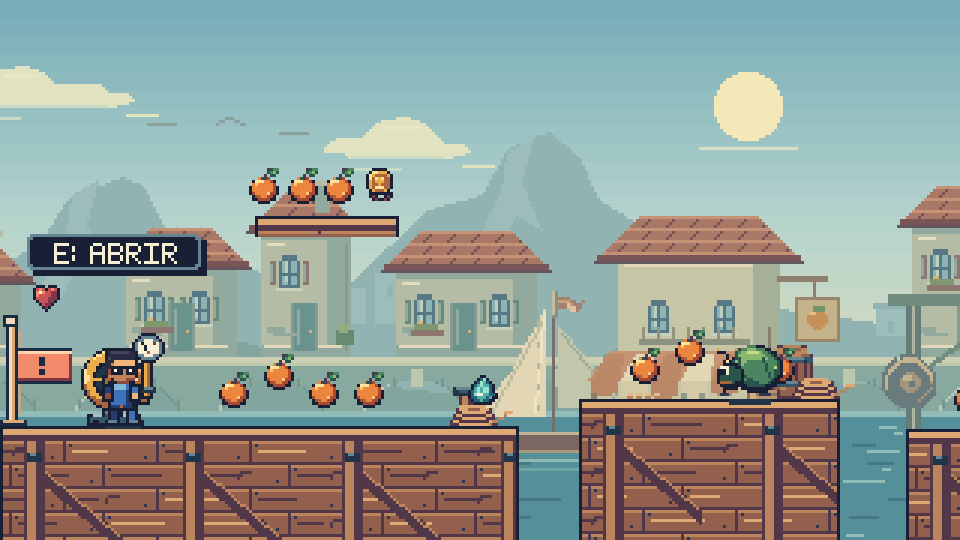
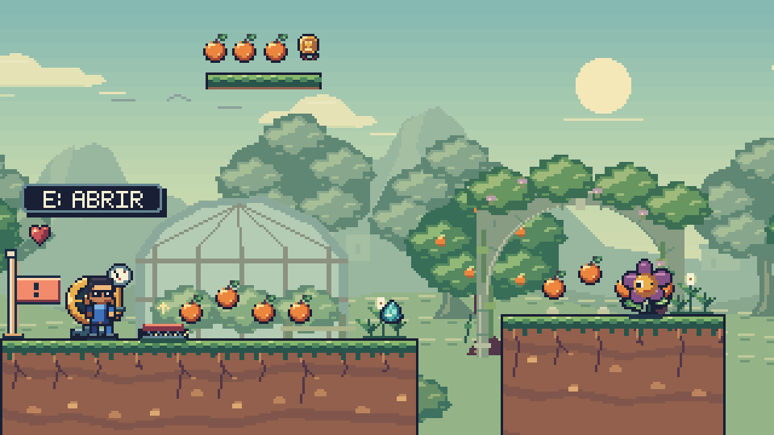
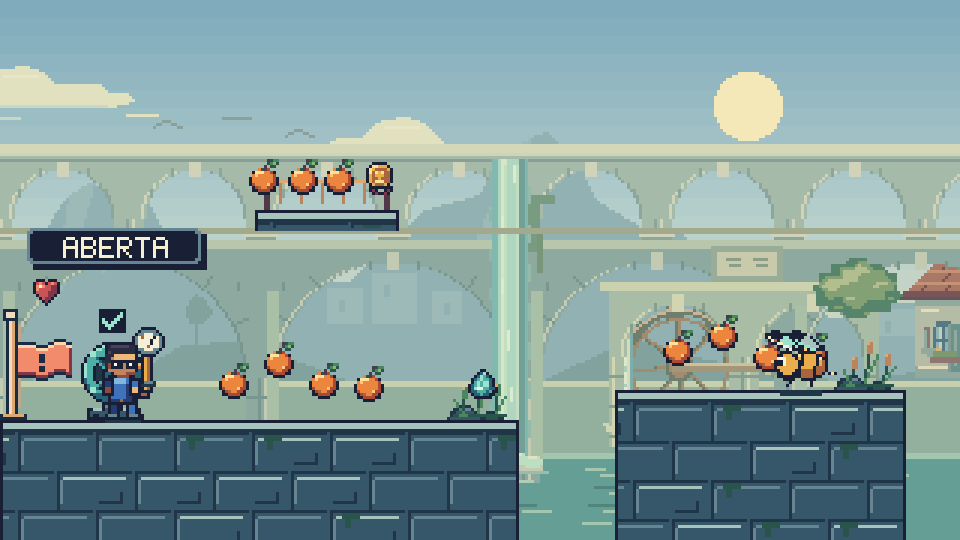
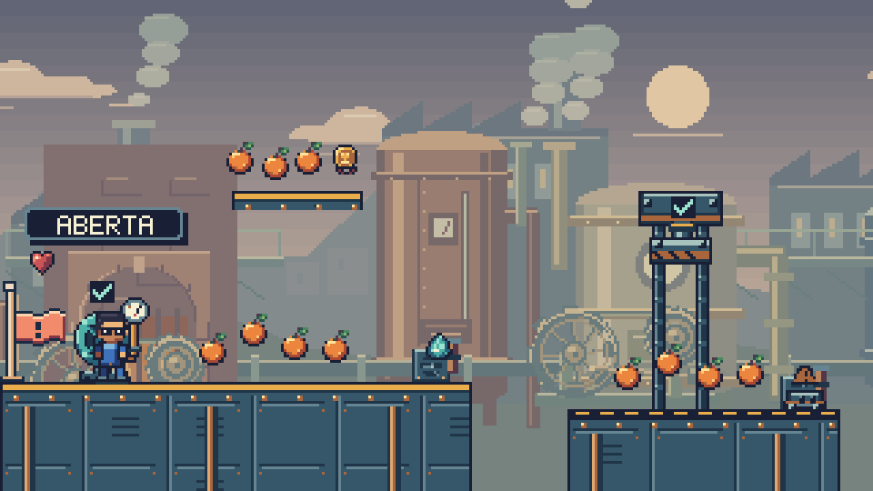
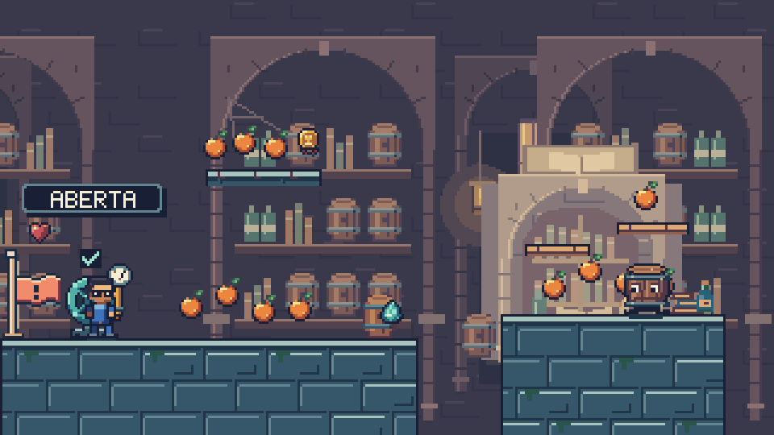
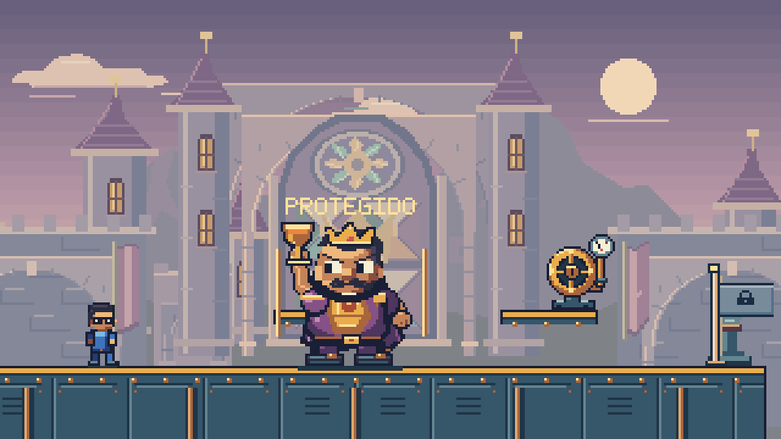
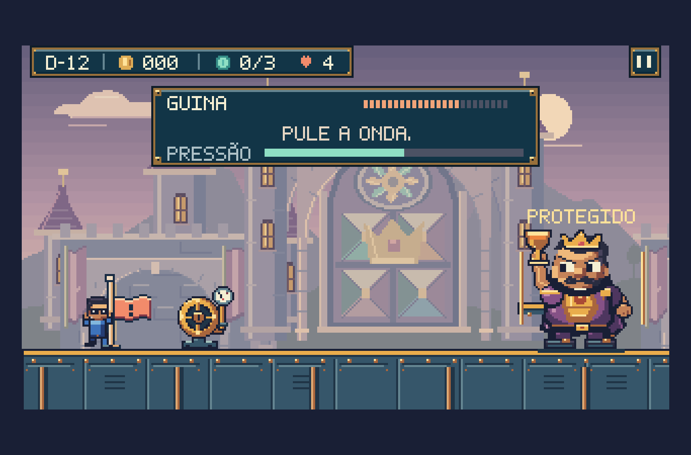

Super Feka Gaps World · Império da Delícia · 8 de outubro
O vento, a água e as máquinas ganham vida.
Mais movimento e acabamento nos cenários do Império: tecidos ao vento, árvores e flores, rodas d’água, fornalhas, lanternas e pequenas peças de cenário. O salão de Guina recebe um vitral facetado, com rosácea e coroa em relevo.
14 fases7 ambientes50 enquadramentos320 × 180 pixels nativos
Explore os cenários em movimento.
Carregando os desenhos do jogo…
Prévia do renderizador real com estados preparados para inspecionar a arte. A simulação está parada; os personagens não percorrem a fase. A preferência de movimento reduzido pausa a animação. Use o controle de câmera para verificar a composição e o paralaxe.
Antes e depois no mesmo ponto.
As imagens acompanham a fase e o trecho selecionados acima. Ambas usam o mesmo enquadramento; a comparação parte da revisão anterior de objetos e inimigos.
Acabamento de perto.

Cais. Costuras nas velas, toldos flexíveis, carga suspensa, cordas enroladas e caixas com ferragens.

Pomares. Copas com movimento discreto, flores nas pérgolas e plantas menores junto ao caminho.

Aqueduto. Rodas e fluxo adicional respondem à mesma fonte que libera a passagem superior.

Refinaria. Polias, correias e bielas conectadas; chaminés, fornalhas e pequenas ventoinhas em movimento.

Adega. Lanternas com chama, mesa de leitura, páginas que se levantam, livros e frascos trabalhados.

Salão de Guina. Rosácea, vidro colorido, divisórias e coroa esculpida, com contraste reservado para o chefe.
Inspecionar quatro instantes dos detalhes animados
Dentro da janela do World.

Mesma janela e interface do jogo. Captura de um estado preparado da segunda fase do chefe.